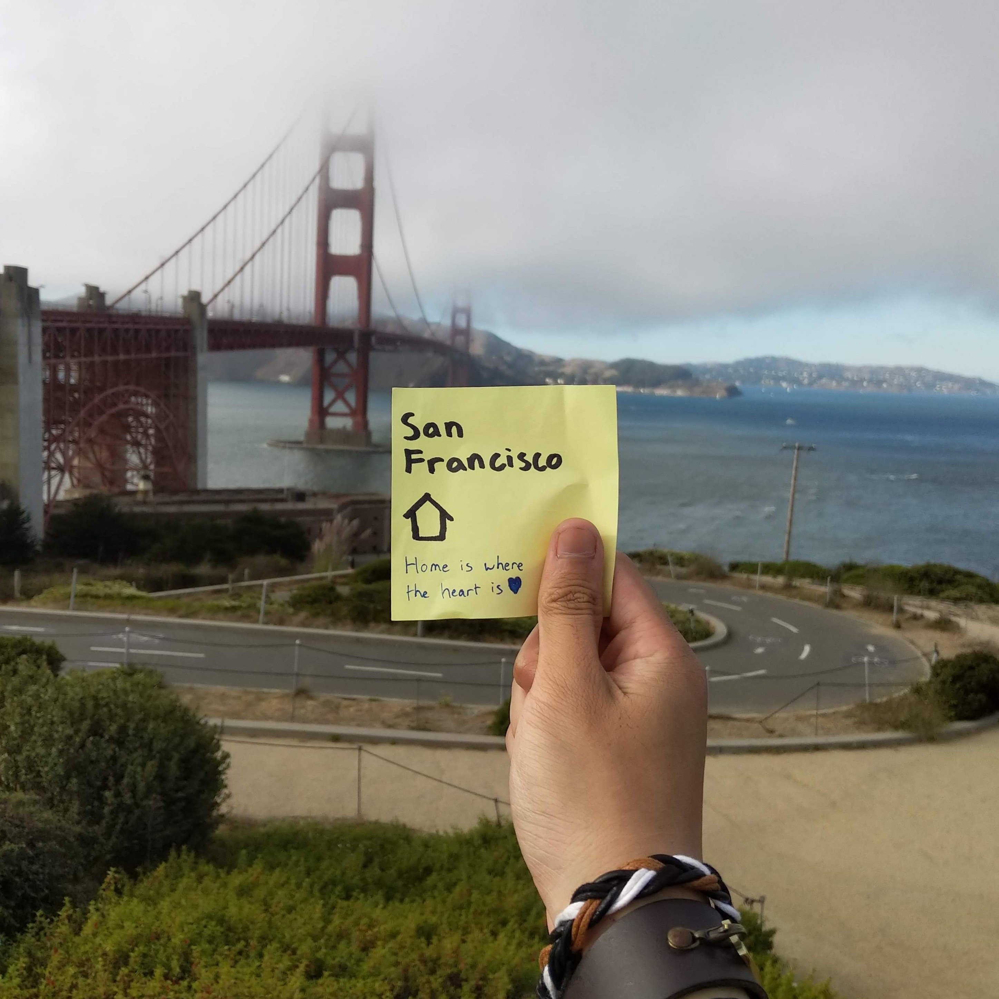
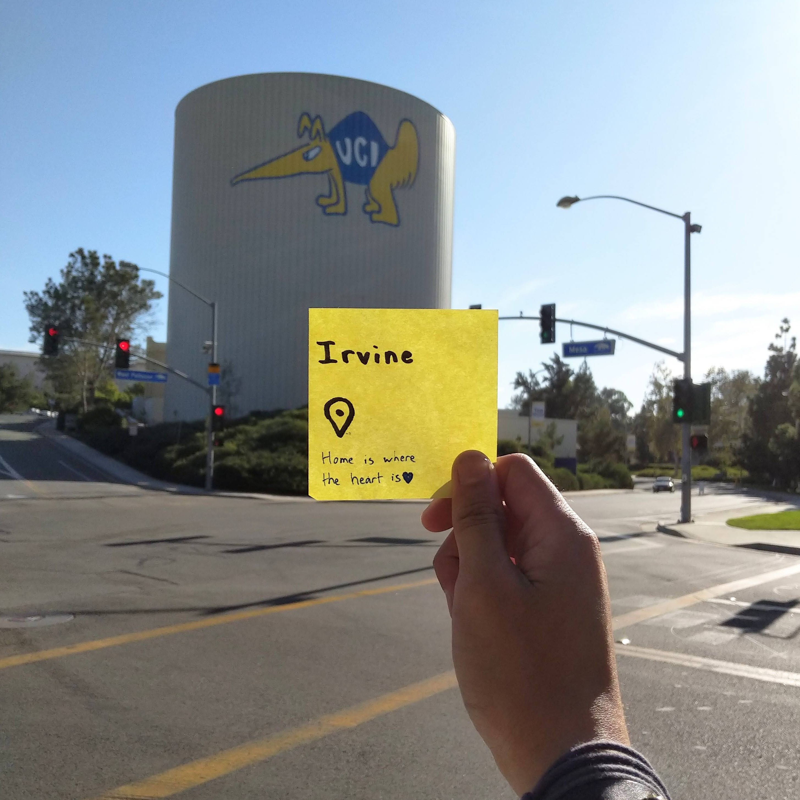
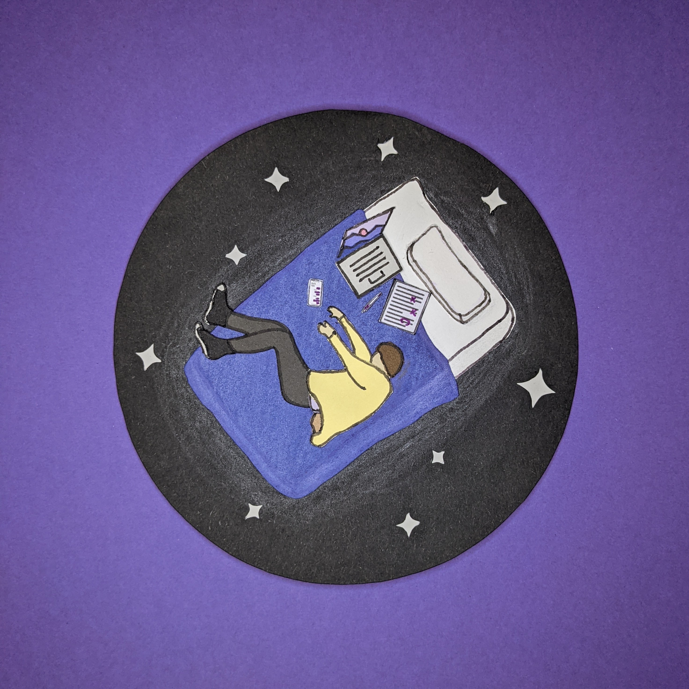
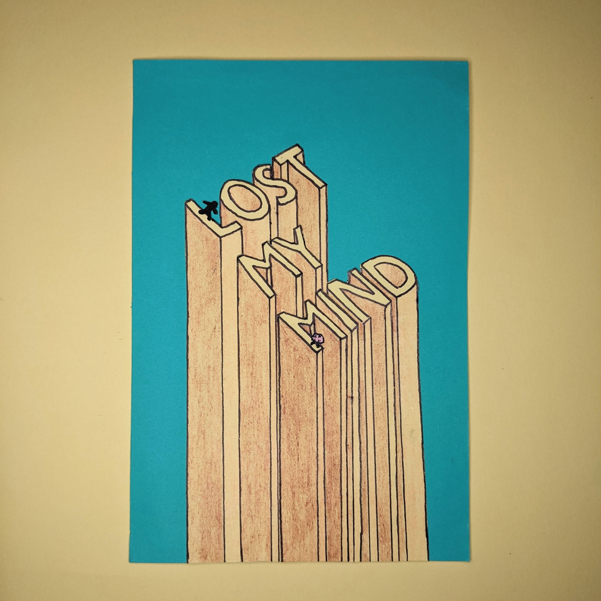
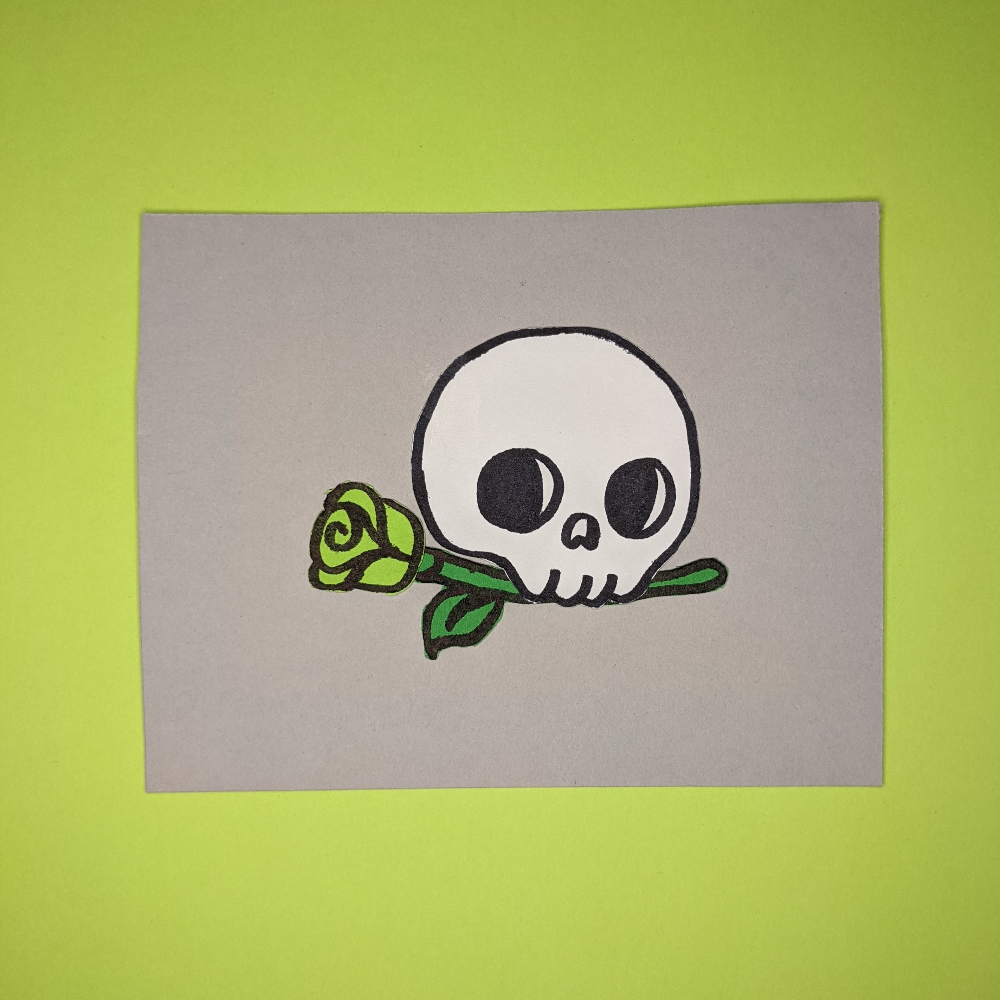
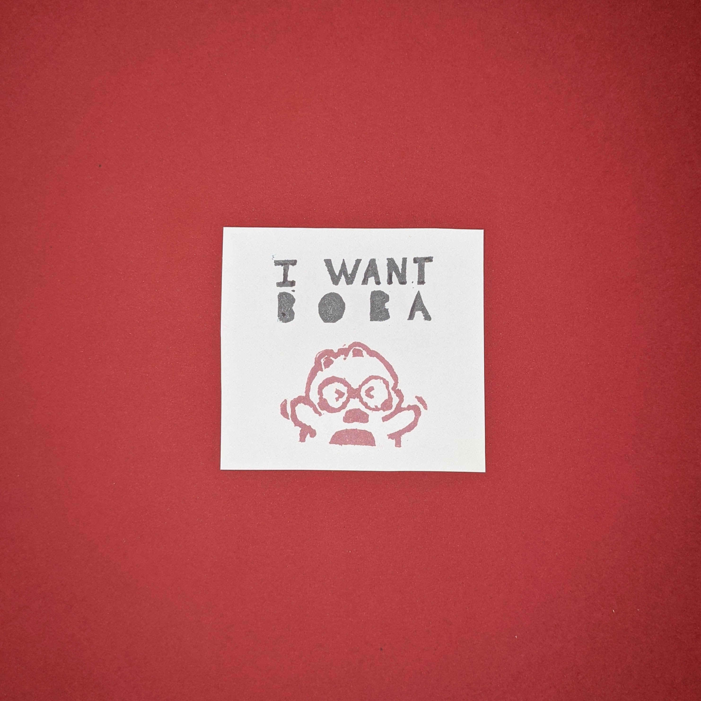

Randy Quilala
In a Nutshell...
Hi! I'm Randy Quilala (he/him), a 4th year Computer Science student at the University of California, Irvine. I've been interested in programming since 2018 and am currently looking into web development.
Born and raised in San Francisco & studying at UCI
- 
- 
Technical Skills
Python
C/C++
x86 Assembly
HTML & CSS
Operating Systems
Machine Learning
Resume
I Like a Lot of Things
- 
- 
- 
- 
Some of my hobbies include design and paper craft. I primarily design with Adobe Illustrator, and often translate my designs into tangible works of art. Simple shapes, attention to detail, and color palettes can go a long way!
I Help Bring People Together
As one of seven officers in Hiking Club at UCI, I help organize hundreds of our interested members in exploring local trails every weekend. I manage the social media space for the club as well as maintain the underlying code to organize the large groups of students every weekend.